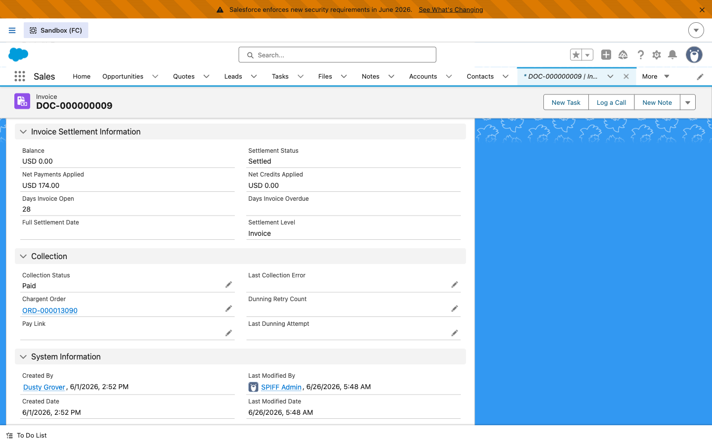
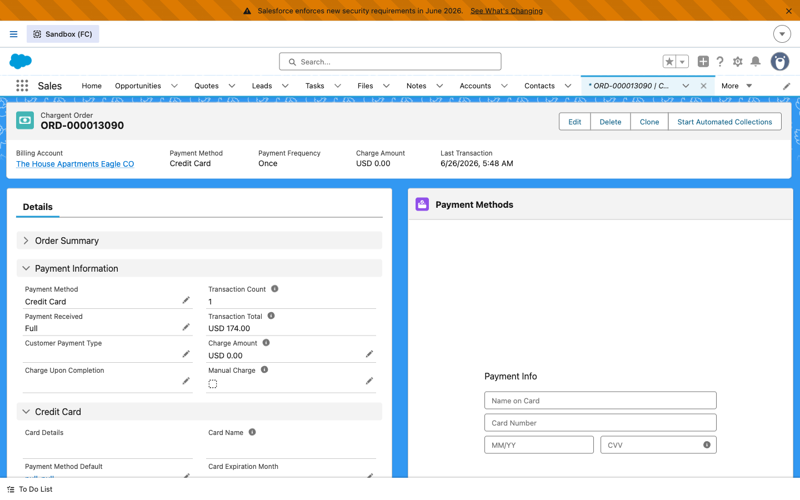
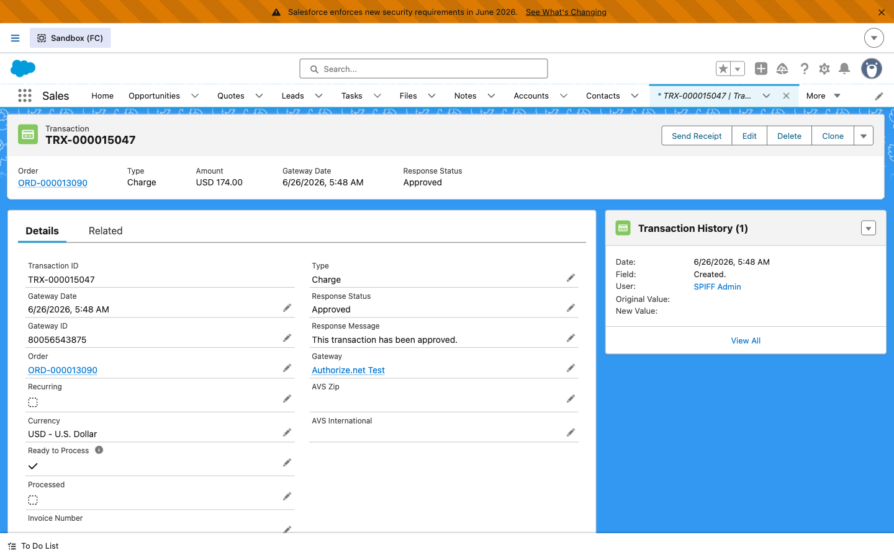
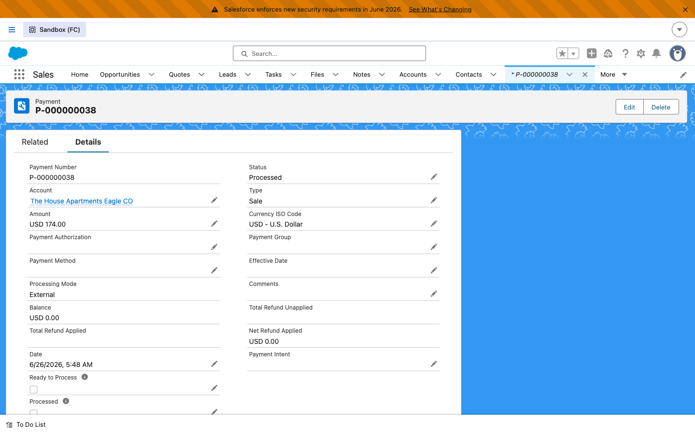
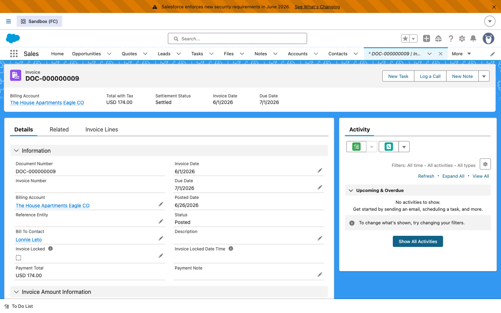
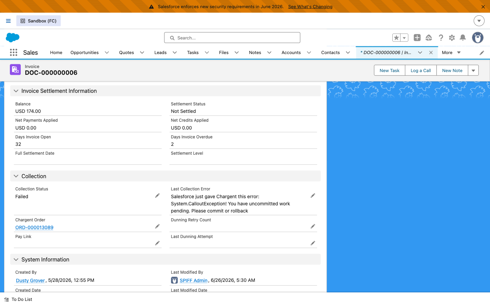
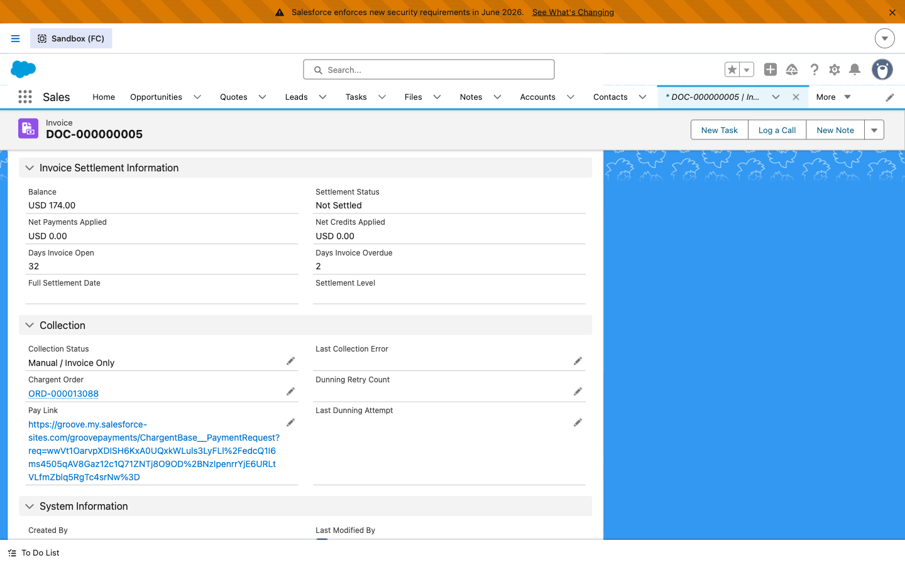
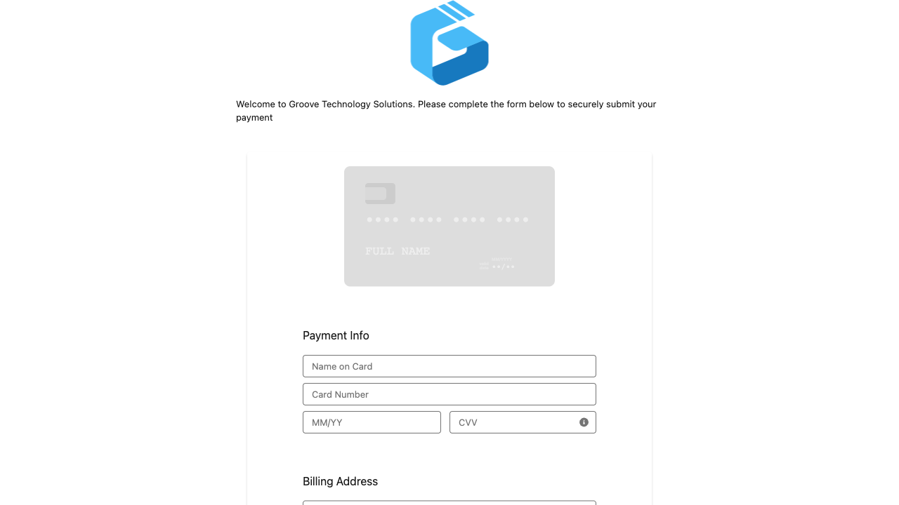

Overview
When an RCB Invoice is Posted and in‑scope (no Chargebee ID, balance > 0), an asynchronous flow creates a Chargent Charge Order linked to the invoice and then either:
- Auto‑collect customers (
Account.Auto_Collection__c = true) → the stored card token is charged automatically. - Invoice‑only customers (
Auto_Collection__c = false) → a hosted Pay Link is generated for the customer to pay.
A successful Chargent Transaction flows back: a Payment is created and applied to the invoice (Collection_Status = Paid / Partially Paid). A failed charge sets Collection_Status = Failed and is retried by the dunning engine (due+3, due+6) before ending at due+61.
How to use this guide
Do the one‑time Test‑data setup first, then work each area. Each area lists the steps, shows what the real record looks like, and states the pass criteria. Finance follows the reconciliation checks.
⚙ Test‑data setup no migration needed
The only thing migration normally provides that UAT needs is a stored card token on the account. You create one by tokenizing an Auth.net sandbox card. ~10 minutes, once.
- Create / pick a test Account (e.g. "UAT – Auto Collect Co"). Make two — one auto‑collect, one invoice‑only — to cover both paths.
- Tokenize a sandbox card. Create a Charge Order on the account (Gateway =
Authorize.net Test, an Opportunity, Payment Method = Credit Card), open the Chargent payment component, New Payment Method → enter the test card (see below) → tokenize. This creates an Auth.net CIM token like526956659‑539030077. - Copy the token to the Account field
Chargent_Payment_Token__c. (This is the step migration automates.) - Set the collection mode:
Auto_Collection__c = TRUEfor auto‑charge, orFALSEfor the Pay‑Link path. Optionally setApply_Surcharge__c. - Generate an invoice (Bill Now on an activated Order, or an existing Draft), set its
Opportunity__c, and Post it.
Apply_Surcharge__c, Auto_Collection__c, Chargent_Payment_Token__c) are on the standard Account layout. Some accounts use a record‑type‑specific (managed) layout where these aren't shown — set those via the API/data loader, or have an admin add the fields to that layout. Field security is already granted via Groove_Invoice_Admin.
Auth.net sandbox test card
| Card (Visa, approve) | 4111 1111 1111 1111 · exp 12/2030 · CVV 123 · ZIP 85001 |
| Billing address | Use a complete address — Auth.net rejects incomplete addresses (error E00027). |
| Decline | Use Auth.net's published sandbox decline triggers (developer.authorize.net testing guide). |
1 Auto‑charge a stored‑card customer ✓ Proven (real charge)
Goal
A Posted invoice on an auto‑collect account is charged automatically end‑to‑end, with the payment applied back and the invoice marked Paid.
Steps
- On an auto‑collect account (token set,
Auto_Collection = true), open a Draft invoice with an Opportunity and a balance. - Click Post. (Posting is asynchronous here — allow a few minutes for Posting In Progress → Posted.)
- Watch the bridge run automatically — no further clicks.





2 Declined charge → failure capture → dunning ✓ Proven
Goal
A failed charge is captured cleanly (no phantom payment), the invoice is flagged, and it enters the dunning queue for automatic retries.
Steps
- On an auto‑collect account, use a decline sandbox card/trigger when tokenizing.
- Post the invoice and let the auto‑charge run.

3 Hosted Pay‑Link for invoice‑only customers ✓ Proven (live payment form)
Goal
For customers who pay themselves, the bridge generates a branded hosted payment link on the invoice instead of auto‑charging.
Steps
- On an invoice‑only account (
Auto_Collection = false), post an invoice. - Open the invoice's Pay Link and pay it to confirm the round‑trip.


groove.my.salesforce-sites.com) — a sandbox‑refresh leftover — so sandbox tokens were validated against production. Fixed by pointing it at the sandbox domain (groove--fc.sandbox.my.salesforce-sites.com). This URL is environment‑specific: re‑set it after every sandbox refresh, and keep the production value in production (don't let the sandbox value promote to prod).
4 Partial payment Ready to test
Steps
- Charge / pay an amount less than the invoice balance.
5 Dunning / retry engine Time‑gated
Goal
Failed invoices are automatically retried and, if still unpaid, closed out — with the subscription left active.
The scheduled flow Invoice_Dunning_Retry runs daily (08:00 UTC) over Posted / unpaid / Failed invoices. The tracking fields live in the invoice's Collection section (Dunning Retry Count, Last Dunning Attempt — visible in the UAT‑1 screenshot).
DueDate is immutable on Posted invoices, so you can't fast‑forward it. Either let a real Failed invoice age, or ask SaaScend to seed a time‑shifted Failed invoice (pre‑Post) to exercise a full cycle.
6 Scoping guardrails — should NOT fire Ready to test
Steps & expected
- An invoice with a Chargebee ID → bridge does not fire (migrated/legacy invoices excluded). ✓
- A zero‑balance invoice → does not fire. ✓
- An invoice already linked to a Charge Order → no double‑create. ✓
7 Surcharge toggle ✓ Logic proven
Goal
Surcharge is a single manual switch — off for most customers, on for the few who get surcharged.
Steps
- On a test account set Apply Surcharge = TRUE (default is OFF).
- Post an invoice / create a Charge Order for that account.
- Open the Charge Order and check the Waive Fee field.
Apply_Surcharge = TRUE → Charge Order Waive Fee = false (surcharge applies). FALSE → Waive Fee = true (waived). Verified both directions in sandbox.
$ Finance / reconciliation checks
After the SF‑team scenarios, Finance confirms the money/ledger view. See the AR / Finance SOP for day‑to‑day operation.
| # | Check | Pass criteria |
|---|---|---|
| FIN‑1 | Payment matches gateway transaction | Payment GatewayRefNumber = the Auth.net Transaction ID; applied via PaymentLineInvoice. |
| FIN‑2 | Invoice balance / status reconciles | Balance = original − applied Payments; Collection Status reflects Paid / Partially Paid. |
| FIN‑3 | No phantom payments on failure | A declined/errored charge creates no Payment; invoice unpaid with error captured. |
| FIN‑4 | Dunning‑ended reportable | Collection Status = Dunning Ended - Not Paid filterable for write‑off / AR follow‑up; subscription still active. |
Records used in this guide
| Area | Record | What it shows |
|---|---|---|
| Auto‑charge | DOC‑000000009 · ORD‑000013090 · TRX‑000015047 · P‑000000038 | Posted invoice → auto charge → Approved txn → Payment → Paid |
| Pay‑Link | DOC‑000000005 · ORD‑000013088 | Manual / Invoice Only + hosted Pay Link |
| Failure | DOC‑000000006 · ORD‑000013089 | Failed + Last Collection Error captured |
Companion docs: UAT Guide (markdown), AR/Finance SOP, Handover Summary, Route A Bridge Design, and the live UAT Tracker Google Sheet.
Known gaps / not in scope for this UAT
| Item | Status |
|---|---|
| Hosted Pay Link page (invoice‑only self‑pay) | ✅ Working (fixed 2026‑06‑29). Was showing "expired" due to the Payment Request config's Sites URL pointing at production after a sandbox refresh — corrected to the sandbox domain. Environment‑specific: re‑set this URL after each sandbox refresh; keep prod's value in prod. |
| Surcharge rate in Chargent | Logic built; rate/fee‑feature config pending (Rory) |
| Token + Auto_Collection migration | Phase 2 data work; UAT uses self‑seeded test data |
| Production gateway | UAT uses the Auth.net sandbox gateway; prod repoints at cutover |
| Conga invoice "Pay Now" merge | Confirm {!Invoice.Pay_Link__c} merged into the PDF (Rory) |
| Account fields on record‑type layouts | On the standard layout; managed record‑type layouts need a UI add |
| Org‑health Apex blocker | Gates production deploy only — not UAT |